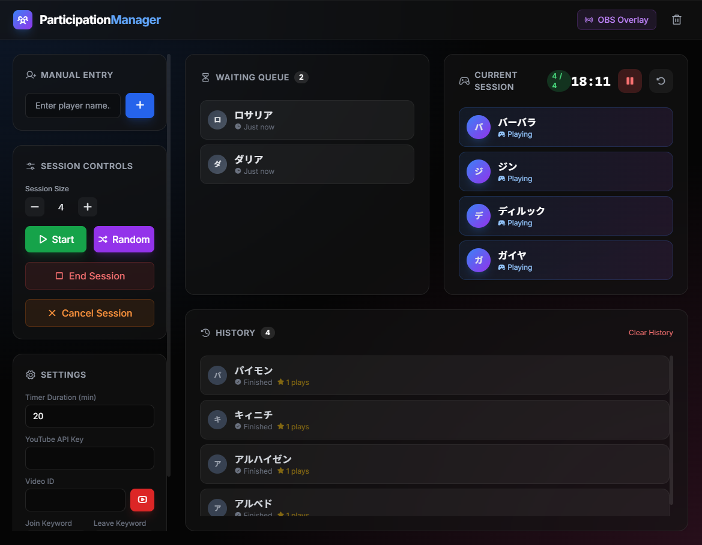
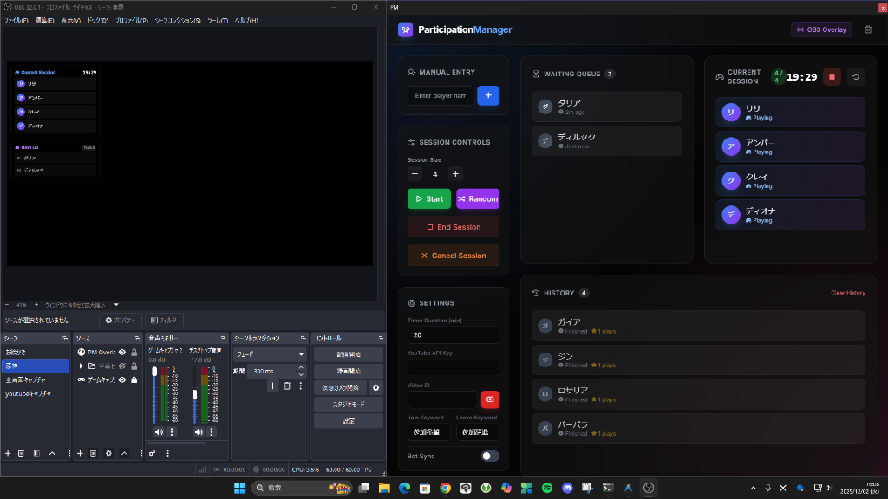

ParticipationManagerとは？
配信者のための、究極の参加型管理アシスタントです。視聴者がチャットで特定のキーワードを入力するだけで、自動的に待機リストに追加。順番管理、タイマー、OBSへの表示まで、すべてをワンストップで提供します。
主な機能
📝
自動リスト化
「参加希望」などのキーワードを検知し、チャットから自動でリストを作成します。
⏱️
プレイ時間管理
一人当たりの持ち時間を設定し、タイマーで管理。交代のタイミングを逃しません。
🎨
OBS連携
待機列や現在のプレイヤー情報を、OBSに美しくオーバーレイ表示できます。
🔄
リアルタイム更新
参加状況はリアルタイムで反映。視聴者も自分の順番を常に確認できます。
ギャラリー
